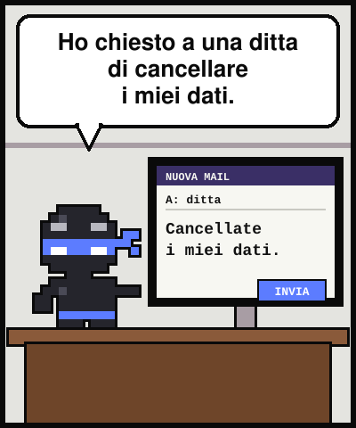
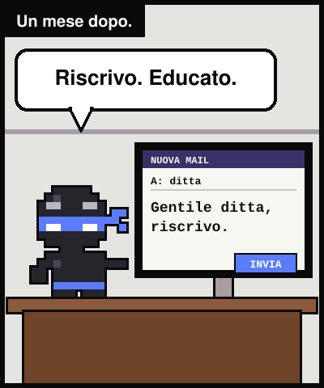
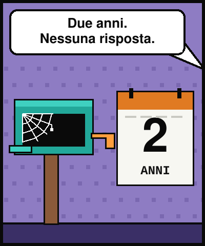
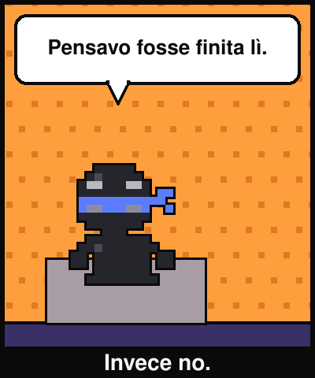
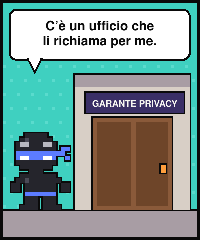
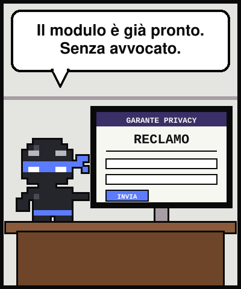
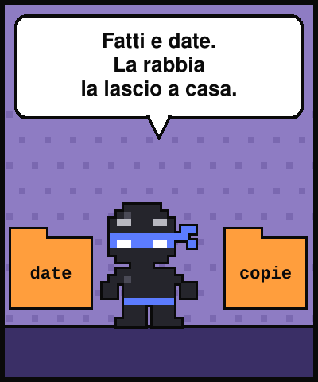
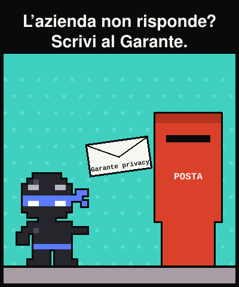

Lezione dal 2077 · n.008
Per due anni un'azienda mi ha ignorato. Pensavo fosse finita lì. C'è un ufficio, in Italia, che le scrive per te.








Ho chiesto a una ditta di cancellare i miei dati. Tre lettere in tre mesi. Risposta: «Inoltrata all'ufficio competente.» Poi silenzio.
Ho smesso. Sembrava restasse solo un avvocato.
Esiste una strada gratuita: il reclamo al Garante. Lo può firmare direttamente l'interessato, via PEC, raccomandata o a mano, con un modello già pronto.
Servono i fatti, comprese le richieste già fatte all'azienda. Le tue tre lettere ignorate sono il documento che serve.
«Il silenzio di chi doveva rispondere non chiude la storia: la consegna a qualcun altro.»